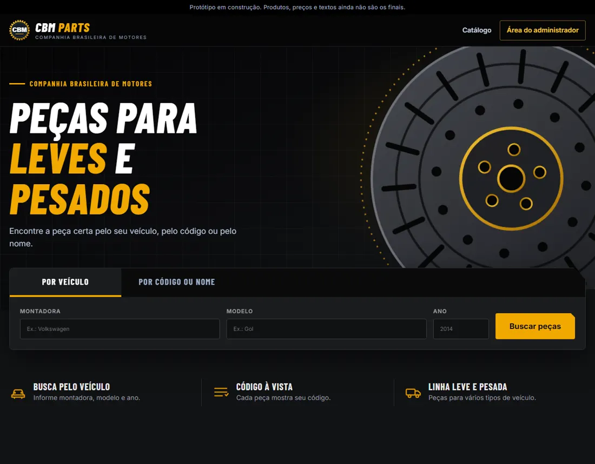

Sistema web · em destaque
CBM Parts
O projeto mais completo do portfólio. O cliente busca a peça pelo veículo, pelo código ou pelo nome, filtra por linha, categoria e marca e abre a página da peça. Por trás, uma área de administrador com login cadastra e edita as peças num banco de dados.
- Busca por veículo, código ou nome
- Painel de administrador com login
- Banco de dados SQL (Cloudflare D1)
- Visual escuro e visual azul
- JavaScript
- Cloudflare Pages Functions
- SQL (D1)
- Autenticação
